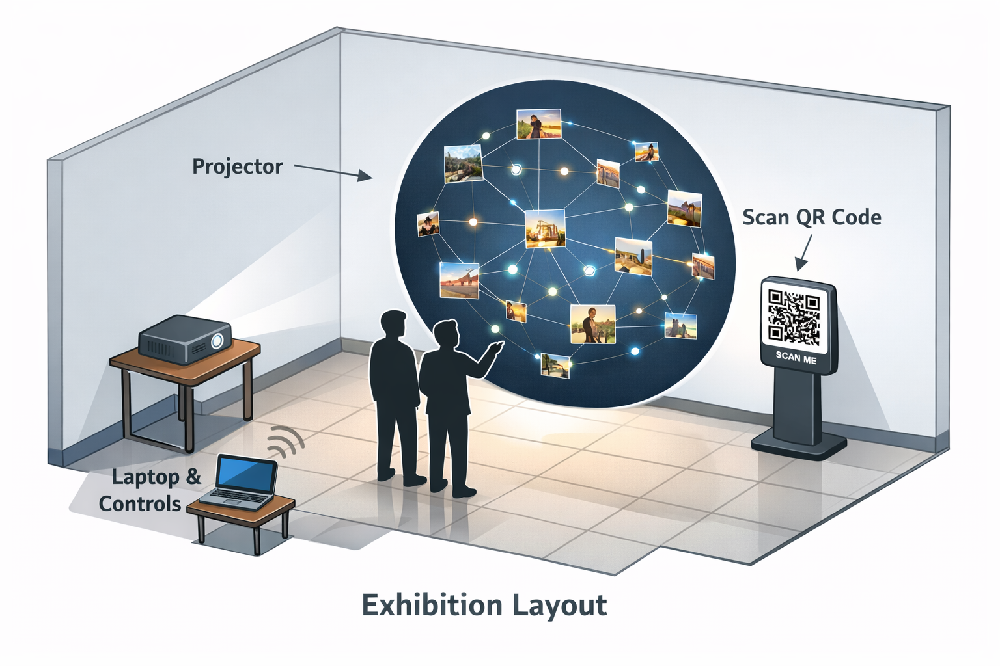

01
QR upload flow
The first step was building the upload entry point. The QR code links directly to the mobile upload page, so the user can move from phone to projection without extra friction.
Interlinked is a live projection-based installation where people upload images through a QR code and see them appear inside a circular visual field. From there, relationships form between images through simple curved lines, turning individual contributions into a shared visual system.
The installation invites people to upload an image from their phone through a QR code. Once uploaded, the image appears instantly inside a circular projection, becoming part of a shared display. Instead of treating images as separate, the system allows connections to form between them. These connections are shown through clean curved lines, keeping the experience minimal and easy to read while still allowing meaning to emerge through interaction.
The visual language is calm and controlled. The circle removes hierarchy and keeps all images equally present, while the connection lines are kept simple to avoid distraction. The goal is to create a space where people can focus on relationships between images rather than visual effects.
The current upload page is live and working. This is the link connected to the QR flow:
The first step was building the upload entry point. The QR code links directly to the mobile upload page, so the user can move from phone to projection without extra friction.
We built the projection-mapped circle as the main visual environment. This established the shared field where all uploaded images would live together in a balanced composition.
The next layer focused on how connections appear between images. Instead of using heavy visual effects, we developed a system of simple curved lines that clearly show relationships while maintaining a clean and minimal composition.
We kept polishing spacing, pacing, readability, and visual balance so that the whole system feels exhibition-ready and not just technically functional.
User scans the QR code
User enters the upload page and selects an image
The image is uploaded and appears inside the projection circle
Connections form between images through simple interaction

The visuals are intentionally restrained. Dark tones, balanced spacing, and simple line connections create an environment that feels calm and readable. The absence of heavy effects allows the focus to remain on the relationships between images.
The goal is not only to make the system work, but to make it feel sensitive, readable, and emotionally intentional.
The intention is to show how the technical and creative layers come together into one system. Interlinked is built around participation, but its real focus is on how connections are made visible and meaningful in a shared environment.